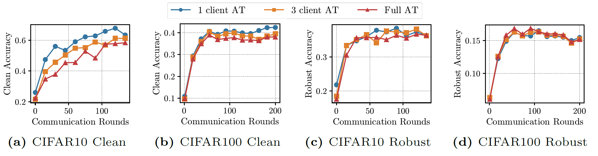
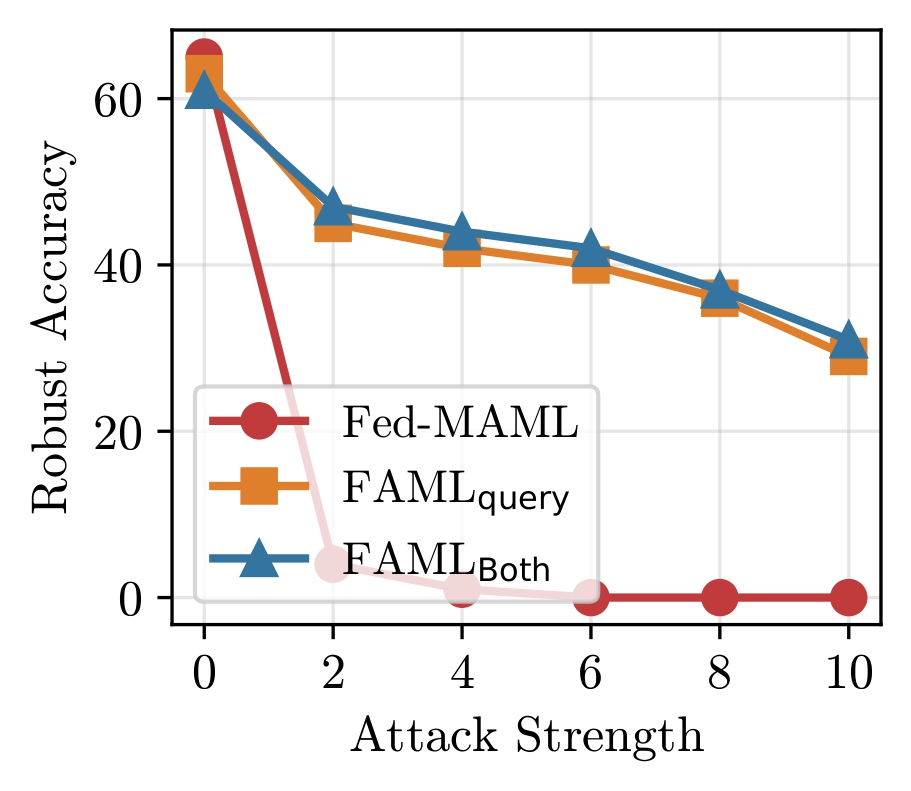
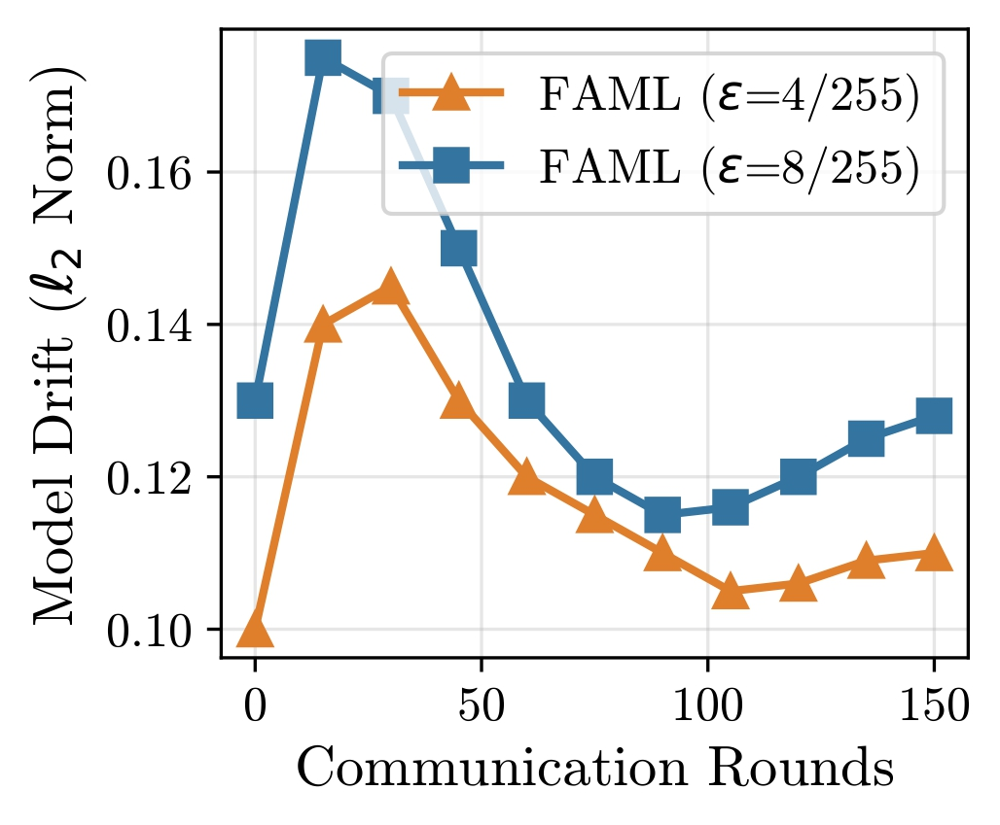
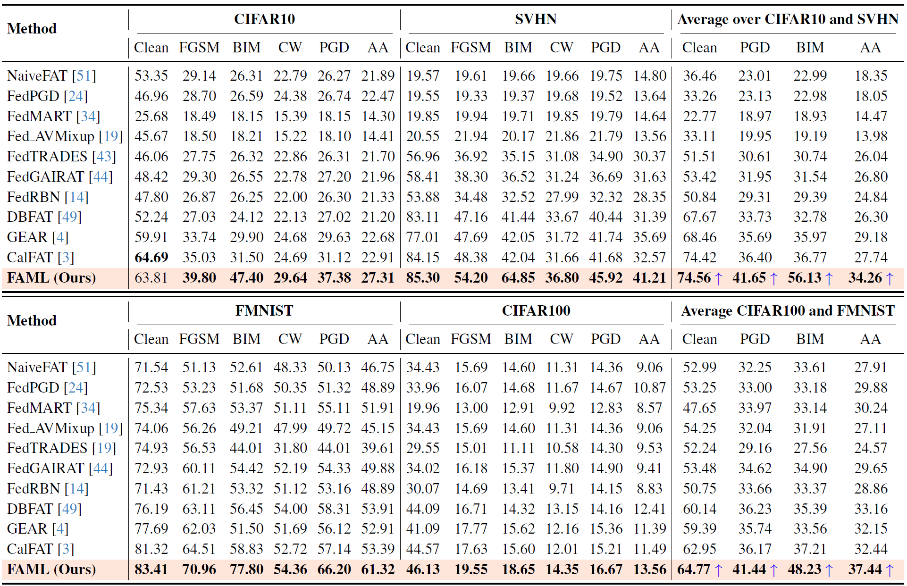
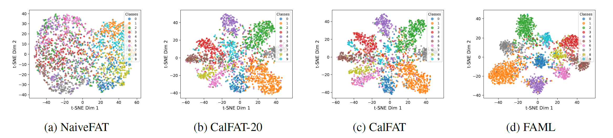
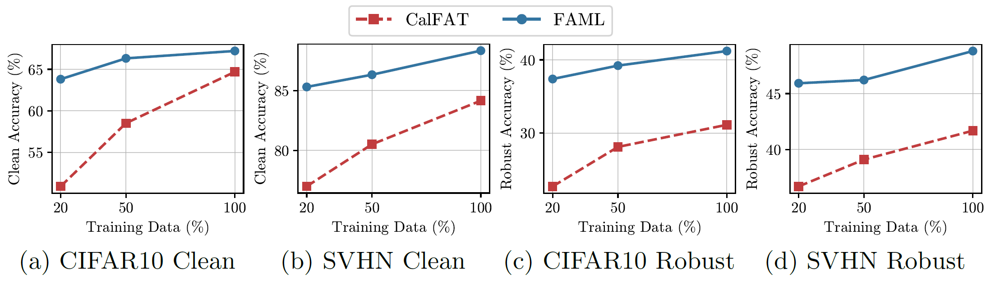
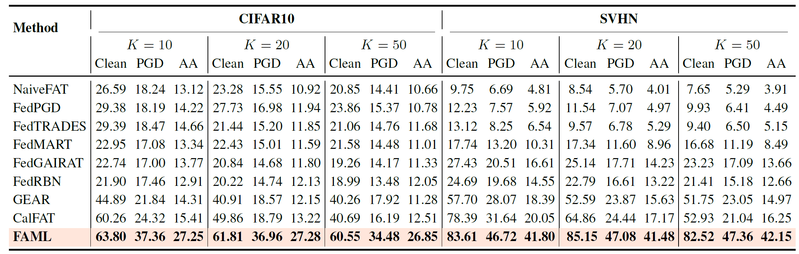
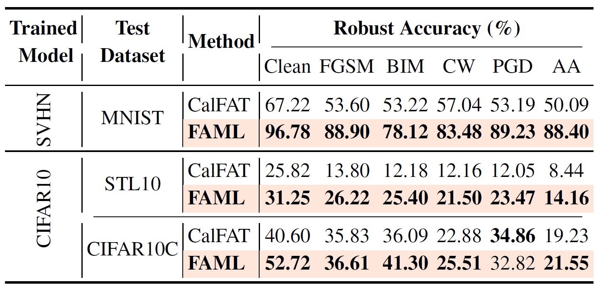

When Data is Scarce, Learn to Adapt: Robust Federated Learning via Adversarial Meta-Optimization
FAML achieves SOTA robustness with single adversarially trained client
Comparison of robust and clean accuracy on CIFAR10 and CIFAR100 with varying numbers of AT-performing clients in FAML. Notably, even with a single AT-performing client, FAML, even with a single AT-performing client, FAML attains robustness comparable to the full-AT setting while preserving higher clean accuracy.

Abstract
Contributions
- We propose FAML, a federated adversarial meta-learning framework designed for robust learning under data scarcity and client heterogeneity.
- We show that a single adversarially trained client is sufficient to propagate robustness across the federation, removing the need for adversarial training at every client.
- FAML achieves strong clean and robust performance using only 20% of the training data, enabling robust federated learning in highly data-scarce regimes.
Federated Adversarial Training & Client Drift
In FAML, we leverage meta-learning to tackle data scarcity and client heterogeneity. However, robust federated learning also requires stable aggregation under non-IID drift and increasing attack strength. We therefore examine robustness under stronger perturbations and the evolution of model drift across rounds.

Robust Accuracy vs. Attack Strength. FAML remains robust as perturbations increase, while weaker meta-learning variants degrade rapidly.

Model Drift over Communication Rounds. FAML reduces drift and stabilizes convergence, even under stronger perturbation budgets.
Experimental Results
Clean and Robust Performance
We evaluate FAML against state-of-the-art federated adversarial training baselines across CIFAR10, SVHN, FMNIST, and CIFAR100 under multiple attack settings. FAML consistently achieves stronger clean and robust performance, demonstrating that a single adversarially trained client is sufficient for SOTA performance across the federation while requiring only 20% of the training data.

Feature Representation Analysis
We visualize feature embeddings using t-SNE to examine class separability. Compared to prior FAT baselines, FAML produces more compact and well-separated clusters, indicating improved feature robustness and alignment across clients.

Feature Representation Analysis
Clean and PGD-20 robust accuracy of FAT methods on CIFAR10 and SVHN with varying training data ratios. FAML achieves SOTA performance even with only 20% of the training data.

Scalability Performance
Clean and robust accuracy across different numbers of clients K = {10, 20, 50} on CIFAR10 and SVHN datasets under PGD-20 and AutoAttack (AA) at ϵ = 8/255. FAML consistently outperforms all baselines, demonstrating strong robustness and scalability

Non-IID vs IID Performance (β Analysis)
Under severe non-IID settings (β = 0.05) and IID conditions (β = 10), FAML maintains strong robustness and stability. The results show that our proposed approach achieves SOTA performance even in highly heterogeneous federated environments.
Out-of-Domain Generalization
To evaluate transfer robustness, we test models trained on one dataset and evaluate on out-of-domain datasets. FAML demonstrates significantly stronger cross-domain robustness compared to prior methods, highlighting the effectiveness of transferable robust priors learned via meta-optimization.
